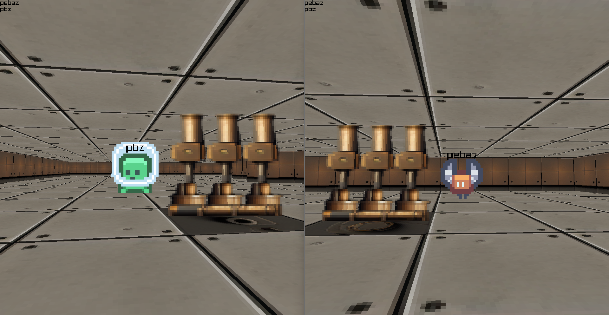
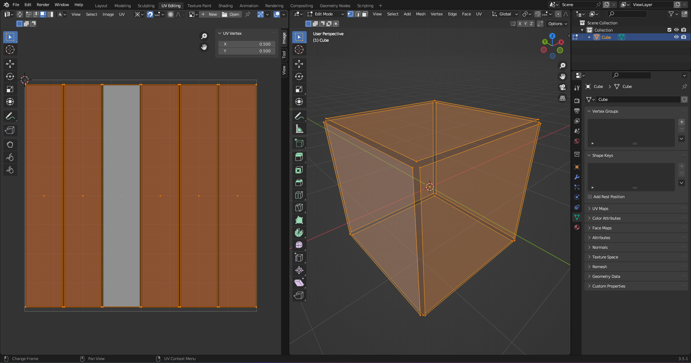
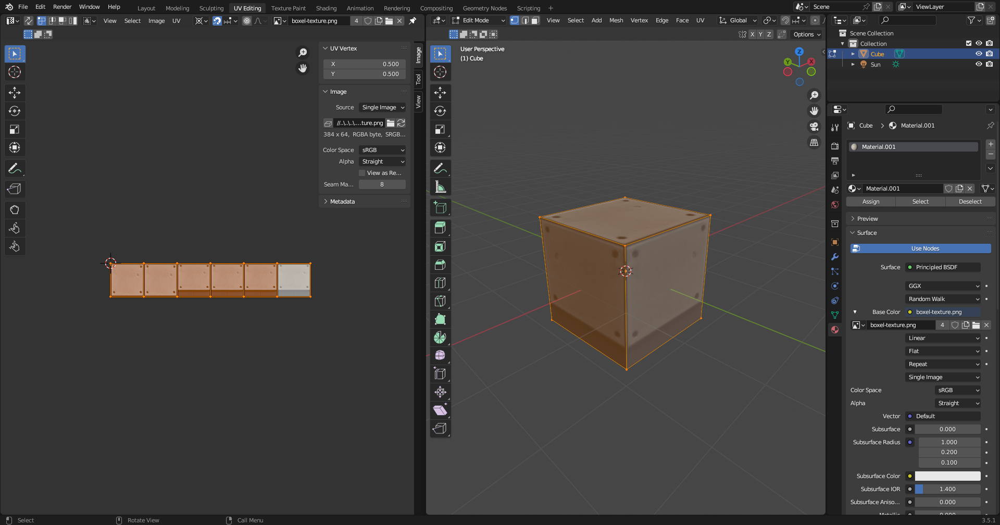
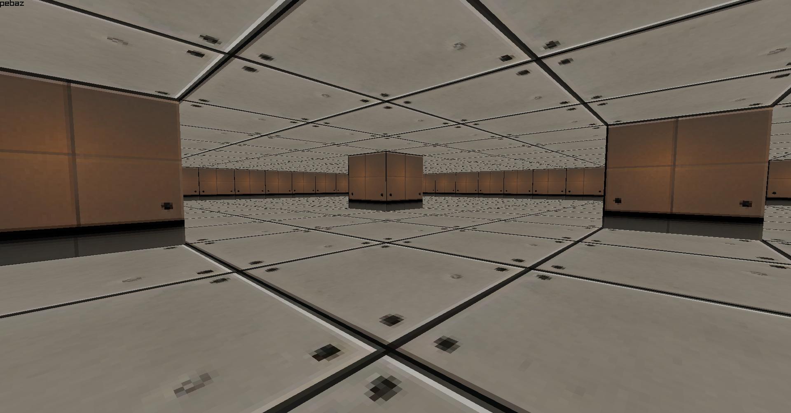

Boxels: 11 Years Of Learning
My Game Programming Journey
2023-07-22
Introduction

It's taken me a lot of personal development to get to the point where I could even finish something I'd call a "game". Boxels is not that. Other than walking around, there is nothing to iteract with in the gameworld. Instead, I would consider this project to be an extensible base upon which to build more functionality later. For instance, the barebones entity system can be extended to support picking up items or adding vegetation to the world.
For the longest time I worked on "games" only to the point of seeing something on screen or achieving a particular technical accomplishment and I would table the project for later. Over time, there were so many projects like this that it became a personal mission to finish as many projects as possible. I went back and finished several in-progress projects and went on to start and then finish many more. I became hungry for "checkboxes" as I used to think of them. As the years went by I noticed that very few of my finished projects were games. After all the time I spent learning about games and game technology, this did not feel great. I felt I needed to have something to show for the knowledge I accumulated about games in the 11 years I've been programming.
I was ready for a change and decided that this would be my last "from-scratch" (as in, without a game engine) game I would do by myself. I set out to make a multiplayer experience with simple cuboid walls and billboard sprites.
Boxels is the result of this effort. Since it was for my own personal closure, it is not released and not open source, so the public-facing deliverable is this post.
Overall Design of Boxels
Boxels refer to a nomenclature I have developed over the years:
- Pixels (others): containers for a specific color in a 2D image (Mario)
- Voxels (others): volumetric pixels (Minecraft)
- Bloxels (me): isometric 2.5D voxel sprites (Alloy Bloxel Editor)
- Boxels (me): textured cubes large enough for one game entity to stand in
The design of the game involved a client that handles player input, sound, resource loading, and graphics, and a server that would handle the gameworld simulation with physics, entity movement, and map generation.
The overall idea was that players could walk around in a cuboid world, bump into walls, each other, and perhaps pick up items or anything else I could come up with. I ended up just making networked collision with boxels, entities, and players, but the groundwork has been laid to add more later.
Development Timeline
I created boxels in 15 day's time working in the evenings and weekends for a total of approximately 30 hours of work on 12 separate days.
%%{
init: {
'logLevel': 'debug',
'theme': 'default',
'themeVariables': {
'cScale0': '#A0522D',
'cScale1': '#8A3324',
'cScale2': '#6B8E23',
'cScale3': '#8A9A5B',
'cScale4': '#9EA587',
'cScale5': '#E97451'
}
}
}%%
timeline
title Timeline of Project Boxels: Week 1
Day 1 [7/3/23]: Raylib hello world example up and running
Day 2 [7/4/23]: Textured boxel model
: Perspective camera
: Boxel <-> Entity collisions
: Walking around in world
Day 3 [7/5/23]: Billboard sprites
: Entity <-> Entity collisions
Day 4 [7/6/23]: Attempted Rendezvous Server for NAT punchthrough
Day 5 [7/7/23]: Attempted using TCP & UDP together
: Adopted TCP event transport
: Added message protocol
: Multiple players connected
Day 6 [7/8/23]: Created game object model
: Moving entities over network
%%{
init: {
'logLevel': 'debug',
'theme': 'default',
'themeVariables': {
'cScale0': '#A0522D',
'cScale1': '#8A3324',
'cScale2': '#6B8E23',
'cScale3': '#8A9A5B',
'cScale4': '#9EA587',
'cScale5': '#E97451'
}
}
}%%
timeline
title Timeline of Project Boxels: Week 2
Day 7 [7/9/23]: Players see each other
Day 8 [7/11/23]: Created stoppable asynchronous Task system
Day 9 [7/12/23]: 3D audio concept
: Gamepad input
: Rewrote networking to use task system
Day 10 [7/13/23]: Player name labels
: Clients receive map with 6-sided boxels
: 3D audio complete
Day 11 [7/14/23]: Networked physics with FCL
Day 12 [7/15/23]: Non-player entities
: Created test map with AI generated textures
: Generated final build using Nuitka
3D audio took me almost an entire day. Physics took me an entire day. Networking took me 3 days and I rewrote it 3 times. I got distracted and tried 2 different networking techniques that ended up failing: a public rendezvous server for NAT Punchthrough and using TCP and UDP at the same time. This took up more time but I'm glad I crossed them off my todo list of things to experiment with.
I rapid prototyped the project using Kenny's free assets. This helped make the beginning of the project more enjoyable as there was something to render on screen from day one.
Technical Details
Libraries Used:
Although I didn't use a game engine, I did make use of the extensive ecosystem of quality libraries in the Python community. By being selective about what libraries I used, I was able to maintain full control over the architecture of the game and could decide when and where to implement something myself. One example of this is 3D audio. I ended up using basic panning to make it sound as if a sound was 3D because it turns out that distributing OpenAL with an application is more difficult than it should be. There is some choice to be had here, as there are many Python game libraries like:
However, I've really grown to love the C-like API of Raylib.
Here's the full list of libraries I used, not counting dependencies of dependencies:
- Raylib: cross-platform windowing, rendering API, mouse/keyboard/gamepad input, audio/spatial audio, timing/game loop, texture/audio/mesh loading
- Flexible Collision Library: collision detection & response
- Pydantic: data modeling and validation, event format
- MessagePack JSON compression, wire format
- MeowHash Python: I wrote Python bindings to Casey Muratori's MeowHash library
- Nuitka: compile Python project to executable, walk dependency tree and bundle C extensions
Project Size
The entire game is 1578 lines of Python code (2158 if you include comments and whitespace). This is an astonishing number because this is a 3D multiplayer experience, not a command line application. People really seem to underestimate Python. Sometimes for good reason, other times it just baffles me how hard some tasks are in other languages when I've seen good designs that have existed in Python for years before being adopted elsewhere.
Game Object Model
The game object model was maintained by the server and mirrored on the client. Modifications to the model during runtime were communicated via one-shot or frame-by-frame events. The map was only updated upon modification and the current position of entities and connected players was sent every frame. The object model was simple in that there were only ever 3 types, one for the player, entities, and boxels. More types would have eventually been needed to structure and store more data, however, as dictionaries formed the backbone of the client and server's game object storage.
Networking
Communication between clients and the server was implemented by using raw TCP sockets. I wanted to create a networking solution by hand because I learned this a long time ago and have rarely gotten a chance to use it for something real. It ended up being harder than I remember, mostly because I had forgotten things like: "are TCP connections full duplex?" 🤔 (Yes they are).
Both the client and the server made use of a custom networking facility that used raw TCP sockets. To send structured data back and forth, an event/messaging model was created by using Pydantic models serialized to JSON and encoded with MessagePack which greatly reduced their size. Events were effectively type checked as constructing one with incorrect data types was impossible using Pydantic.
graph TD
classDef blue fill:#2374f7,stroke:#000,stroke-width:2px,color:#fff
classDef pink fill:#eb3dd6,stroke:#000,stroke-width:2px,color:#fff
classDef orange fill:#fc822b,stroke:#000,stroke-width:2px,color:#fff
classDef red fill:#ed2633,stroke:#000,stroke-width:2px,color:#fff
classDef green fill:#16b522,stroke:#000,stroke-width:2px,color:#fff
_1((Server)):::blue <-- TCP --> _2([Client 1]):::pink
_1 <-- TCP --> _3([Client N]):::pink
Events also took advantage of the mixin class design pattern by inheriting from a quick update type that would demarcate that event as eligible for deduplication in situations where the network was unable to keep up with the amount of those events being sent. This worked extremely well and made it so that only one player input or entity update event was ever sent over the wire. Since the events already used Pydantic, adding a new event type was as simple as inheriting one or two classes and adding annotated fields.
On the server, connections were tracked by address and handled in their own asynchronous task. This allowed for parallelism to the fullest extent possible in CPython, given the limitations imposed by the GIL. It also meant that the server could be started and then it would handle incoming connections and sending events back and forth. Events sent by the client would all be funneled back to the server simulation. Some events like player connection events would have to take the client's network address into account in order to keep track of where the event came from.
Asynchronous Programming
sequenceDiagram
Main Thread ->> Task Thread: start()
Task Thread ->> Task Thread: init()
critical Concurrent to Main Thread
Task Thread ->> Task: tick()
Task ->> Task Thread: check if stopped
Task Thread ->> Task: tick()
Task ->> Task Thread: check if stopped
Task Thread ->> Task: tick()
Main Thread ->>Task Thread: stop()
Task ->> Task Thread: check if stopped
end
Task Thread ->> Task Thread: drop()
Task Thread ->> Main Thread: join()
Asynchrony was harnessed through the creation of a stoppable task type that took advantage of Python generators to yield at key stopping points in the thread handler function. Cleanup code could then examine which checkpoint was last yielded to see what resources needed to be freed. The server transport, client handler, and client transport all used the task type in order to run code in a separate thread. All the usual Python threading caveats apply, although a useful feature of the task class was a built in way to send and receive messages from outside and inside the task. This provided a very flexible base upon which to build complex raw socket handling code while utilizing Python's ability to get parallelism with IO tasks.
I really enjoyed making this system because it allowed tasks to be created by
subclassing the Task class and then overriding the task() method where a
simple yield statement would cause the task thread to check if there had been
a request to stop and join the thread. This made it so that runaway tasks were
more difficult to accidentally create if yields were placed at appropriate
checkpoints. Another benefit of yield is that it allowed the task thread to
simply not call the task generator and instead call drop() which would perform
any cleanup tasks that needed to be done like closing files or network
connections. Since tasks could be stopped abruptly in the middle, it was
necessary for the drop() method to know what resources were in use. I
implemented a checkpoint system so that tasks could simply:
yield <checkpoint object> and that object would be passed to drop() as the
last checkpoint encountered before deallocating resources.
3D Boxel Design
Boxels are designed to support a different texture on each of the 6 sides and be about the size of one entity in the game. This makes it so that levels can be created quickly while still feeling big enough. I found that with voxels, each "volumetric pixel" is too granular and basically requires outdoor areas to make use of procedural generation.


The 3D boxels themselves were loaded from a mesh created in Blender containing 6 quads made of 2 coplanar triangles, each with UV coordinates mapped to a spritesheet laid out with room for 6 textures along the X axis. The boxel model was loaded once but then each unique combination of boxel side textures was drawn to an image and uploaded to the GPU for use during rendering. In this way, boxels using the same texture could be batched by Raylib and there was ever only 1 mesh in play aside from the quads submitted by Raylib for billboard sprites, fonts, and debug geometry. When drawn to an image during runtime, they would look like this:

Specifying side textures to cache used these combinations:
- All sides
- Top, rest of sides
- Top, bottom, rest of sides
- Top, bottom, left, right, front, back
A small benefit of this was that if a boxel had the same texture ID for all of it's sides, only one texture ID would need to be sent over the network when the map changed.
All of the textures except the player textures were generated using Midjourney. I half expected to not feel a sense of ownership or satisfaction after using AI to generate textures but I gotta say, it was so much fun! It turns out that although the AI generates everything for you, it actually takes quite a bit of effort to describe what you want in terms that it will accept. Most of the time it takes multiple descriptions refined over 1-10 attempts in order to get the result you want. This is real work, although the tool in this case is a text prompt.
Resource Caching
At startup, both the client and the server iterate over all the assets in the entire resource folder and hash their contents using MeowHash. MeowHash was amazing to use because it just astonishingly fast. The resource path of the asset is then stored in a table like this:
| Key | Value |
|---|---|
| Hash | Path |
| Path | Hash |
The main advantage to storing the hash and path twice but in reverse is that a resource can either be looked up by path or by file content hash. This is a powerful system because the server can specify that a given entity or boxel should have specific textures by sending only their hash which is only 16 bytes (128 bit hash). Additionally, if the server wanted to verify the integrity of the client's resources, it could send a resource manifest containing each path and its hash. I didn't implement that but it would be a powerful validation mechanism.
Challenges Encountered
-
Multiplayer networking is an entirely separate project at least the size of the game client. Every networking project I do, I tell myself this at the end. Every time I start a new networking project, I forget that ever happened. Networking is difficult and will take at least half of your time. This includes considerations about simulating the gameworld as well as what the event system should look like. Don't underestimate how long it will take. It's not a 1:1. A single player game is complexity 1 and a networked multiplayer game is complexity 3 at least.
-
Wire protocol is different than message protocol: I don't know why I never thought about this, but sending messages over the network and deciding how those messages should be sent are two different things. I merged them in my head and had to rethink networking because of it. The wire protocol is how TCP or UDP is used to send data back and forth. The contents of that data is the messaging protocol.
-
There is no cross-platform way to get the MTU in any language: originally, I was planning on using 2 sockets: TCP for reliable messaging and UDP for quick frame-by-frame updates. It didn't matter if packets were lost for UDP since entity positions need to be replaced by the most recent packet anyway.
However, this was kind of a ridiculous journey. TCP went fine, but with UDP, you can only send a maximum data payload of Maximum Transmission Unit (MTU). There are implications if you send more than MTU and they are non-deterministic to the programmer because they rely on the user's networking infrastructure and everything in between. The thing is, there's no built-in way to get the MTU in any programming language I know of. You have to make an operating system call or invoke a Linux-only networking command to get it. 🤦 I abandoned using both TCP & UDP together since I didn't want to just pick a packet size and roll with it only to get a substantial test ready on another machine and experience crazy networking issues.
-
NAT Punchthrough is not 100% reliable, especially not with VPNs in between: Only after I had created a rendezvous server as well as the client and server code to test it did I come across this. I wasted an entire day. NAT punchthrough is when you make a separate request to a public intermediary server between 2 hosts (client & server) where the client gets the server's IP address. The client then sends another request saying it wants to join that specific server. The server polls the rendezvous server and finds a player wanting to connect along with their IP address obtained from the join request. The server immediately starts sending UDP packets containing anything to the client's IP address. Meanwhile, the client has already gotten the server's IP address from the rendezvous server and immediately starts sending arbitrary UDP packets to it.
Up until this point, no packets have successfully gotten from the client to the server or from the server to the client. This is because the server was sending packets that were dropped by the client's router since the client is protected by NAT. If the client started sending UDP packets first, they would not have been reciprocated until the server received the join request from the rendezvous server.
It's complicated! At this point, there's 2 hosts beaming packets towards each other in the hopes that the client's router will first see the client's UDP packet as a request and the server's UDP packet as a response. If this happens, packets finally "punch through" the NAT and data can flow freely back and forth over that one socket. Getting this to work with TCP requires the same gymnastics but without the ability to easily send bogus data like with UDP.
I gave up on this particular design for multiplayer (peer-to-peer) because of how unreliable it would be if a player had a VPN or if anything else got in the way.
-
Python's dynamic typing was really difficult when the project got larger. I couldn't believe the sensation. It was as if as soon as the project got to be slightly larger than I could hold in my brain, I literally felt something fall out of my working memory and I had to go and find what it was and get it back in there.
-
Dynamic typing combined with metaprogramming made for a powerful design for the event system. However, it was also challenging to debug the project as it grew.
Personal Notes
These are not strictly related to the technical or non-technical design of Boxels but I wanted to go over my thought process for projects like this.
I'm sure that there are exact terms and definitions that describe the following concepts but I wanted to list them here as I have come to understand them. I have observed over time that they are some of my core strengths. Hopefully someone will resonate with them as I found it extremely validating to notice and name these behaviors not only to learn more about myself but harness whatever value they possess more deliberately.
Stochastic Ideation: I do this constantly with everything from songs I've heard to code I've written that day to projects I worked on a year ago. Basically, stochastic ideation is when you take an existing something, such as a song, and progressively add entropy to the elements you understand until entirely new forms of that thing are created. A simple example would be Rockelbel's Canon, a rendition of Pachelbel's Canon in D by the Piano Guys. They take an existing framework (the original Canon in D song) and stray from it at key pleasing points so much so that it's an entirely different song even though it still resembles the original song.
Imagine doing this with code, art, 3D modeling, wordplay, or anything else that requires a bit of creativity. This is one of my strongest skills.
Latent Design: I do this nearly every day throughout the day. At any given time, I may have 20 to 30 projects I'm designing in my head intermittently over the course of years. I may ideate on 1 one day and 10 the next. One thing is for certain, however. The longer I think about a project (even without doing any actual work towards finishing it), the project becomes part of me and I "feel" it stronger and stronger the longer this goes on. For instance, the largest project I have ever latently designed lasted for about 10 years. Whenever I needed to explain it to someone, I would almost always make up details on the spot that would become official parts of the design because I wasn't thinking about the design, I was feeling the design out. For this same reason, I have made a fairly decent tabletop RPG game master because it doesn't phase me that most of the details are not filled in. I know that I'll be able to take what I currently know of the game world and fill it in live the same why I think about it day by day in the back of my head.
The greatest advantage of this is that it can survive short periods of time like weekends where short term memory is erased. I believe this is akin to deriving a mathematical formula that you learned in the past but you can't quite outright remember. Lastly, latent design allows me to maximally absorb state of the art ideas as I learn about them. From there, I can rethink the design much the same as I had been prior to learning the new facts.
A Word On Conversational AI
ChatGPT as a coding assitant (both more and less useful than people think) ChatGPT as a coding assistant was both more and less useful than people seem to think. It took me all of my 11 years of practice and an AI assistant to do this in 13 days. People think that the usage of AI makes things effortless but in reality it took many prompts and 11 years of coding experience to make this project. The main advantage I saw to conversational AI was the sheer reduction in the need for searching the web. Upon receiving an answer, I could then drill down into it by asking follow up questions. This is truly the next generation of research.
Overall, I was extremely happy with the results I received from conversational AI. Here are the ones I used during development:
- ChatGPT (OpenAI): Consistently has the best results for coding questions and any other type of question. Keeps track of historical conversation elements the best.
- Bard (Google): The ability to copy and paste images and then ask about them was insanely useful.
- Claude (Anthropic): Very smooth to use. I would say that Claude is the closest to rivaling ChatGPT.
In the past, coding was done by hand using only a compiler. Next, IDEs were used to make editing code closer to the compiler's understanding. After that, LSPs came along which outsourced the job of querying the compiler for code info to a separate process rather than being "integrated" into the editor. This made codebases queryable like a database. Finally, we come to AI models like GitHub Copilot where ChatGPT-like assistance is integrated into the editor itself to grant it more capabilities than code generation alone. This is the future of coding.
Although I did not make use of GitHub Copilot on this project, I'm aware that I my future employability will likely require expertise in AI tooling. For this project, however, I wanted to work how I learned to over the past 11 years. Seriously though, my official advice in 2023 would be to take advantage of the accessability of these extremely powerful AI tools while they remain available to the public.

Conclusion
I had a lot of fun making Boxels. It was hard work but I didn't push myself too far and didn't burn out by the end so overall it was a satisfying experience. I don't know if I'll end up adding onto Boxels but I wanted to make sure that it was possible to do so. If I end up making an actual playable game I'll be sure to upload it to Itch.io or Steam.
If I had to leave a TLDR, here's what I'd say:
Key Takeaways
Good code leading to good technology can be written in any language, but it might require breaking away from established norms in order to get there. Specifically, I didn't do test driven development and inheritance hierarchies are shallow. There are functions defined in global scope and I didn't focus too much on code reusability. Hopefully in another post I'll go over my thoughts on my exact programming philosophy but for now I'll reduce it to: don't overuse object-oriented or functional programming.
Don't underestimate the effort required for making networked multiplayer games. The client and server are not two separate projects, the effort involved is more than 2 times a single player game.
Don't make games in Python. As much as it pains me to say, I truly should have switched to C++ 6-8 years ago. If Rust had been around, I would have used that but it wasn't mainstream back then. I thought I could use enough high performance C extensions to make up for it but the truth is that Python is just too slow. Just for comparison for the curious, run Ripgrep on your entire file system and then ask yourself if you knew computers were that fast. Python isn't. Perhaps Mojo will change that in time.